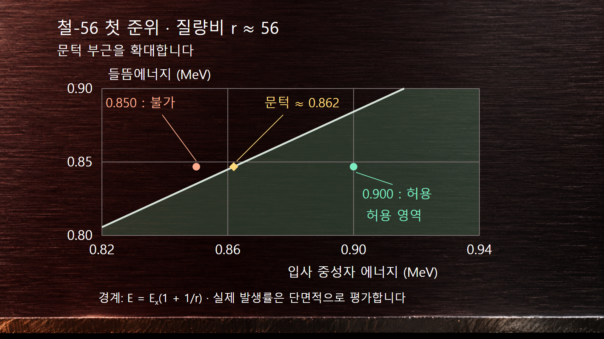
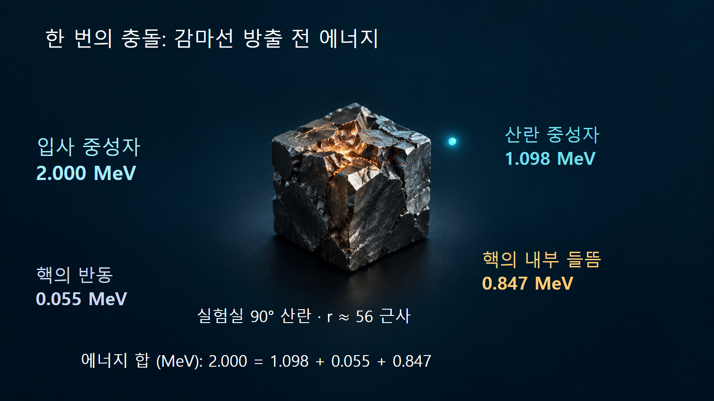

질량·에너지와 핵반응 · 031
비탄성산란
들뜸에너지와 반동을 함께 계산하는 중성자 산란
비탄성산란은 입사입자가 표적과 충돌한 뒤 다시 나오면서 표적의 내부상태를 바꾸는 산란입니다. 여기서는 중성자가 바닥상태의 원자핵을 들뜨게 하는 (n,n′) 반응을 다룹니다. 표적의 원자번호와 질량수는 그대로이지만 운동에너지 일부가 핵의 들뜸에너지로 저장됩니다.
1. 같은 핵종으로 남아도 탄성산란은 아닙니다
반응은 n + AX → n′ + AX*로 표시합니다. 별표는 들뜬상태를 뜻하고, n′의 프라임은 산란 뒤 중성자라는 표기입니다. 중성자 자체가 다른 종류의 입자가 되었다는 뜻은 아닙니다. 핵자들이 이루는 양자상태가 바뀌므로 핵의 내부에너지가 증가합니다.
탄성산란에서는 내부상태가 변하지 않아 중성자와 반동핵의 운동에너지 합이 보존됩니다. 비탄성산란에서는 전체 에너지는 보존되지만 두 입자의 운동에너지 합은 들뜸에너지 Ex만큼 작아집니다. 입사 중성자가 없어지고 질량수가 하나 큰 핵이 남는 방사포획 (n,γ)과도 구분합니다. 직접반응과 복합핵 붕괴는 비탄성산란을 만드는 서로 다른 반응기구가 될 수 있습니다.
2. 에너지는 들뜸·중성자 운동·핵의 반동으로 나뉩니다
처음에 정지한 자유 표적을 가정하고 감마선 방출 전 상태를 보면 E = E′ + ER + Ex가 성립합니다. E는 입사 중성자, E′는 산란 중성자, ER은 들뜬 반동핵의 운동에너지입니다. 따라서 중성자의 에너지 손실 E − E′는 Ex보다 클 수 있습니다. 그 차이가 반동에너지입니다.
반동은 임의로 정할 수 없습니다. 비상대론적 운동에서 r = M/mn을 표적과 중성자의 질량비로 놓으면 ER = [E + E′ − 2√(EE′) cos θ]/r입니다. θ는 이 식에서 실험실 좌표계의 중성자 산란각입니다. 들뜸에 따른 표적 질량의 작은 변화는 이 근사식에서 무시합니다. 앞 글의 탄성산란 식에 쓰인 질량중심계 각도를 그대로 대입하면 안 됩니다.
3. 철-56의 첫 준위에는 약 0.862 MeV가 필요합니다
예시 1｜ENSDF의 철-56 채택준위 자료에는 첫 들뜬상태가 846.7778 keV, 스핀·패리티가 2+로 제시됩니다. 에너지 단위를 바꾸면 Ex = 0.8467778 MeV입니다. 교육용으로 r ≈ 56을 적용하면 문턱에너지는 Eth ≈ Ex(1 + 1/r) = 0.8618988 MeV, 즉 약 0.862 MeV입니다. 실제 핵질량과 상대론적 보정을 적용한 정밀 평가값으로 사용하지는 않습니다.
입사 에너지가 0.850 MeV이면 들뜸에너지 0.8468 MeV보다는 크지만 문턱보다 작습니다. 전체 운동량을 유지하는 데 필요한 운동에너지도 남겨야 하므로 이 정지 표적의 첫 준위를 여기하는 반응은 열리지 않습니다. 0.900 MeV라면 에너지상 허용되지만 모든 중성자가 비탄성산란한다는 뜻은 아닙니다. 발생 확률은 해당 에너지의 단면적으로 판단합니다.
| 철-56 첫 준위의 예시 | 입사 에너지 | 판정 또는 결과 |
|---|---|---|
| 들뜸에너지보다 약간 큰 경우 | 0.850 MeV | 문턱 약 0.862 MeV 미만이므로 해당 채널이 닫힙니다. |
| 문턱을 넘는 경우 | 0.900 MeV | 운동학적으로 가능하지만 발생률을 별도로 평가합니다. |
| 실험실 90° 산란의 근사 계산 | 2.000 MeV | 중성자 약 1.098 MeV, 반동 약 0.055 MeV, 들뜸 약 0.847 MeV로 나뉩니다. |

4. 2 MeV 중성자의 손실량은 들뜸에너지와 다릅니다
예시 2｜같은 첫 준위로의 산란에서 E = 2.000 MeV, θ = 90°, r ≈ 56을 가정합니다. cos 90° = 0이므로 에너지식에 반동식을 넣으면 E′ = [r(E − Ex) − E]/(r + 1)입니다. 수치를 대입하면 [56 × (2 − 0.8467778) − 2]/57 = 1.0979025 MeV입니다.
반동에너지는 (2 + 1.0979025)/56 = 0.0553197 MeV입니다. 1.0979025 + 0.0553197 + 0.8467778 = 2.0000000 MeV로 검산합니다. 중성자는 약 0.9021 MeV를 잃지만 그중 약 0.0553 MeV는 핵의 병진운동이 됩니다. 표시한 긴 소수는 계산 재현용이며 r ≈ 56이라는 근사의 정확도를 높여 주지 않습니다. 이 예는 가능한 에너지 배분을 구한 것으로, 90°에서의 산란 확률이나 평균 에너지를 계산한 결과가 아닙니다.

5. 핵의 들뜸이 감마선원으로 이어집니다
들뜬핵은 더 낮은 상태로 전이하며 에너지를 방출할 수 있습니다. 철-56 첫 준위의 채택 반감기는 6.07 ps이며 바닥상태로의 감마 전이가 알려져 있습니다. 여기서 ps는 10−12초입니다. 따라서 중성자가 강재와 상호작용하는 문제에서는 산란 중성자뿐 아니라 뒤따르는 감마선의 수송도 고려하게 됩니다.
준위 에너지와 검출기에서 측정한 감마선 에너지는 개념적으로 구별합니다. 광자 방출에 따른 핵의 반동, 방출 당시 핵의 운동에 따른 도플러 이동과 검출기 응답이 개입합니다. 다른 준위에서는 여러 감마선으로 이어지는 연속 전이나 내부전환도 가능합니다. 들뜸에너지 전부가 언제나 같은 에너지의 감마선 한 개로 나온다고 일반화하면 안 됩니다.
6. 핵자료에서는 합계와 개별 채널을 구분합니다
ENDF의 중성자 반응 식별번호에서 MT=2는 탄성산란, MT=4는 비탄성산란 합계, MT=51은 잔류핵이 첫 들뜬준위에 남는 채널입니다. MT=91은 개별 준위로 표현하지 않는 연속영역 성분을 나타냅니다. MT=102는 방사포획입니다. MT=4에 포함된 개별 준위의 값을 다시 더하면 같은 반응을 중복 계산하게 됩니다.
강재나 무거운 핵종이 포함된 고속중성자 문제에서는 비탄성산란이 에너지 스펙트럼과 이차 감마선원에 영향을 줍니다. 계산에는 입사 에너지별 채널 단면적, 산란 후 에너지·각도 분포, 감마선 생성 자료가 필요합니다. 천연 철과 철-56 단일 핵종은 조성이 다르므로 첫 준위 하나의 예시를 재료 전체의 응답으로 바꾸어 쓰지 않습니다.
7. 핵의 여기와 물질의 진동을 구별합니다
열중성자 산란에서도 ‘비탄성’이라는 말을 사용하지만, 이때는 분자 회전이나 격자 진동과 에너지를 주고받는 경우가 있습니다. 이는 이 글의 MeV 규모 핵준위 여기와 다른 내부 자유도를 다룹니다. 핵의 들뜬준위 문턱 아래라는 이유로 물질과의 모든 비탄성 에너지 교환이 사라지는 것은 아닙니다.
비탄성산란을 읽을 때는 무엇이 들뜨는지, 어떤 좌표계의 각도를 쓰는지, 감마선 방출 전후 중 어느 상태의 에너지를 합산하는지 확인합니다. 같은 핵종으로 남는다는 사실만으로 탄성산란으로 분류하지 않으며, 중성자의 에너지 손실을 들뜸에너지 하나로 대체하지 않습니다.